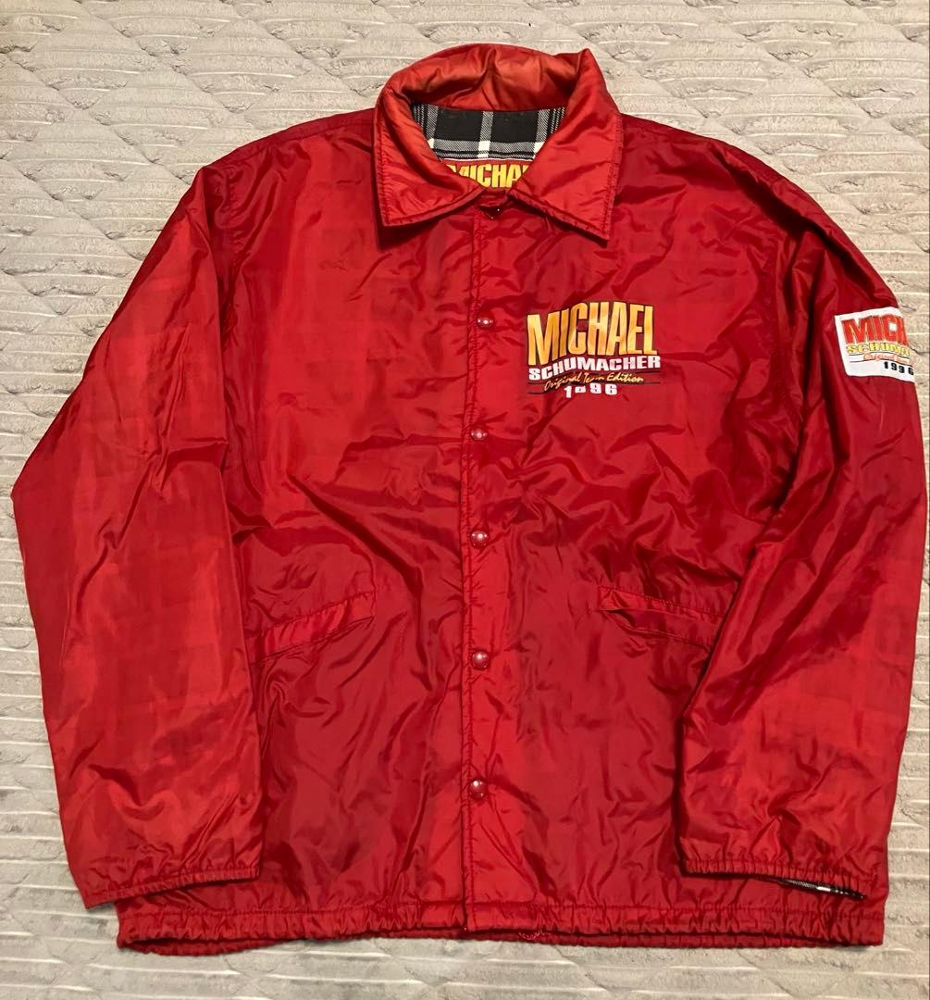
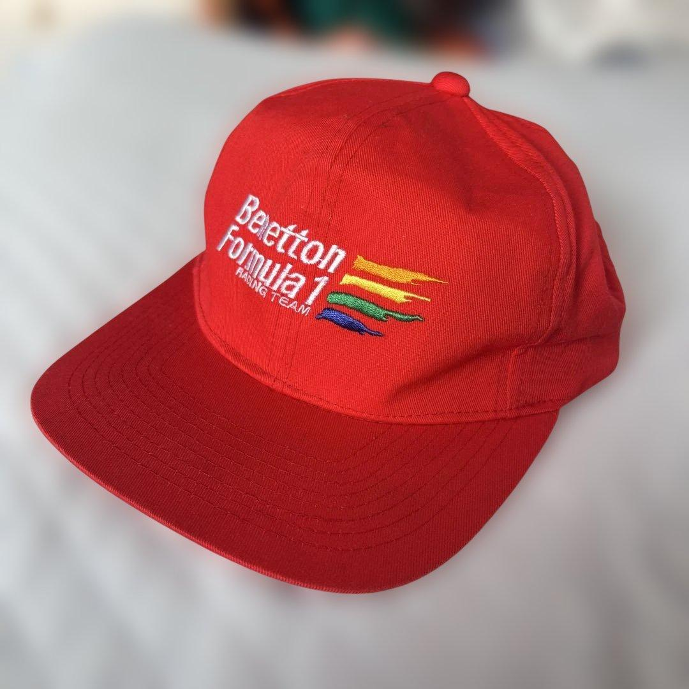

NIPPON
SPEED CO.
@nipponspeedco
Memorabilia de automobilismo
Garimpo
de F1 direto
do
Japão
Peças que marcaram época, garimpadas no Japão e trazidas pro Brasil.

VEM VER OS GARIMPOS
↓
NIPPON
SPEED CO.
@nipponspeedco
Exemplo de garimpo

Peça única
Boné Ferrari DEKRA
Michael Schumacher · anos 90
NIPPON
SPEED CO.
@nipponspeedco
Exemplo de garimpo
Peça única
Camisa McLaren-Mercedes
West · uso real · anos 2000
NIPPON
SPEED CO.
@nipponspeedco
Exemplo de garimpo
Peça única
Boné Suzuka GP Japão '90
Grand Prix · anos 90
NIPPON
SPEED CO.
@nipponspeedco
É comunidade de colecionador
Entra no grupo
e
acompanha
Todo dia tem garimpo novo. Peça é única: quando aparece a tua, você chama. Quando some, some.
Link na bio